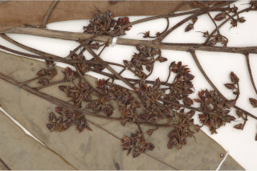
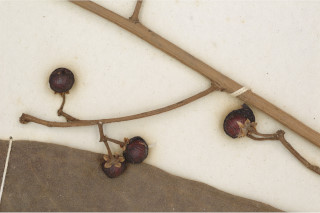
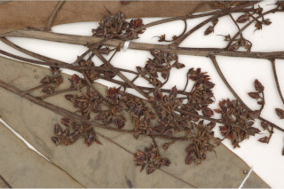
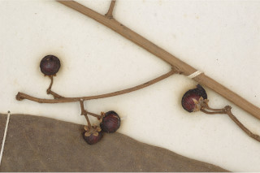

Images :
 




| Habit : | Small trees or large shrubs up to 4 m tall. |
| Leaves : | Leaves simple , alternate , spiral , subverticilate ; petiole ca. 0.5 cm long or subsessile , canaliculate , glabrous ; lamina 14-29 x 4.5-7.5 cm, oblanceolate , apex acute , base rounded to auricled , margin entire , transparent gland dotted, coriaceous , glabrous ; midrib canaliculate above; secondary_nerves ca. 11-16 pairs; tertiary_nerves broadly reticulate . |
| Inflorescence / Flower : | Inflorescence often compound panicle of subumbels , terminal or on lateral branches ; peduncle to 25 cm long, rusty pubescent ; flowers pink. |
| Fruit and Seed : | Berry , globose , red; seed one. |